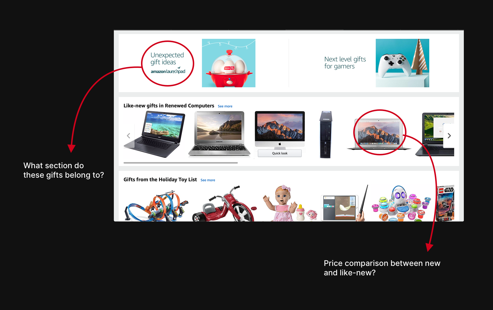

Redesigning amazon
September 2018 - December 2018
Role
Culture-centered design and research
Personal Case Study
Introduction
Design is never done – users want it to be more personal and accessible, at the same time being more functional as well. Amazon is one of the biggest companies in the world right who has its hand in every domain. But for now, the company assumes an indistinguishable design layout for all its global audience which can only serve them for so long with the growing usage of their website. This study is about how a culture-centered approach towards website design could produce experiences that are more accessible and usable for people in Russia.
1. Background
From the outside, it seems tempting to translate the website into a local language for the sake of localization for a target market. But localization is more than that; it must reflect specific cultural preferences in content, navigation, layout, and color, making sure everything makes sense in a linguistic and cultural context when designing a website. Put simply, website localization is creating a just as compelling experience for a target market as your home-based clientele. Hofstede’s Cultural Dimensions neatly summarize the effect of a society’s culture on the behaviour of its members and provide us insight into what the above mentioned cultural preferences and context could denote.

1.1 Power Distance
It defines the emotional distance between two entities which differ in stature. From a design perspective, members of a high PDI society like Russia may expect the website makers to provide them with clear statements and less responsibility as they trust them as an authoritative figure, which makes them less critical and driven to search for in-depth information.
1.2 Individualism
An Individualistic society is one where the members think their own thoughts, make their own choices, and are held accountable for their actions. Russia scores low on individualism, which makes it more of a collectivist society. As a result, it becomes crucial to address this dimension from a designer’s viewpoint; people are likely to make decisions based on what’s popular, what other people think of a product and sharing it amongst other members of the society.
1.3 Masculinity
This dimension tells whether the attitudes of the members of a society reflect assertiveness and competitiveness (masculine), or modesty and care (feminine). As a direct concomitant of Russia’s masculinity index, a feminine society is less likely to critically evaluate a website if the overall experience is enjoyable. They are also more likely to use the contact form and provide valuable feedback to the website.
1.4 Uncertainty Avoidance
It is defined as the society’s ability to tolerate ambiguity-the higher the uncertainty avoidance index, the more rational are the members and their belief in absolute truth. Russia has a very high uncertainty avoidance index, which can inform certain design decisions such as presenting relevant information as structured as possible to help them make a reliable decision. They are less likely to try something novel, therefore the website should not expect the user to ‘read between the lines’ or force them to decide without context and information.
1.5 Long-term Orientation
It describes a society where the members focus on the future, perseverance, thrift and adapting to changing circumstances. With a score 81 on the long-term orientation index, Russian people are more likely to make thorough decisions for the future. For an e-commerce website design, this means including all information pertaining to long-term discounts, and support for ‘wish lists’ so that they are not forced to make an immediate decision.
1.6 Indulgence vs Self-Restraint
Indulgent societies allow free gratification of natural human desires, whereas restraint societies are more likely to suppress pleasure by establishing strict social norms. Russia’s low indulgence index suggests that the members of the society are less likely to splurge while shopping. They are more likely to be frugal shoppers; therefore, it becomes crucial to display them the right prices, discounts, and offers on products while they are browsing the web.
2. Current Scenario
It is no secret that Russia is one of the most attractive target markets for foreign players such as Amazon, eBay, and AliExpress etc. right now. However, the dark horse leading the race of e-commerce in Russia is ‘Ulmart’ – despite the recession and shrinking consumer spending, Ulmart’s growth continued between 2015 and 2016 and one thing has served them well. Seeing Amazon flunk in the Russian market, Ulmart did things differently; their user research governed that most of the people in Russia live in apartments rather than houses; therefore, door-to-door delivery of goods might not be efficient. As a result, they employed a hybrid model between traditional brick-and-mortar stores and e-commerce stores where people pick up their goods, choosing from over 450 pick up points currently. The statement from the CEO of Ulmart-
"[Our model] is the next generation of internet retailing; we can even argue that we are faster and more reliable than Amazon. We bet that in a couple of years, Amazon will switch to our model”; Sergei Fedorinov
signifies the extensive research done by Ulmart to patronize the world’s biggest e-commerce website. It becomes evident that studying user buying habits, their context of use, and their constraints should all be taken into account no matter how successful a product might be. However, even if Amazon were to use the same business model as that of Ulmart, their mode of access, i.e. their website, would still be a mere facsimile of their local American website, except in Russian. Therefore, it is essential to enumerate the things that are out of cultural context in amazon.com:
2.1 Content and navigation
For a society with high power distance, providing them with the right information in a structured format without hampering their ability to navigate becomes a must when designing a website. In Fig. 2 below, the homepage of amazon.com does not conform with the above-mentioned guideline and describes the possible pain points that might conjure up in a Russian market usage:
Ambiguity
In a country with a high uncertainty avoidance index, an e-commerce website should almost always avoid experimenting with the user base, and that goes for both design and business choices. For instance, the current Amazon homepage has an ‘Unexpected gift ideas’, which increases user ambiguity about what that idea could be. In addition, the ‘Like-new’ category does nothing to ensure the user that they would be buying something significantly cheaper as compared to a ‘brand-new’ product. Even on the homepage, the banners give no information about when the deals begin or last till, obscuring the user decision-making. Figure 3 below elucidates on this design choice:
Explicitness
For a highly self-restraint society, prices are everything. Therefore, it is important to be explicit about product costs, discounts, and time periods for the same. For instance, the home page does a good job to grab the users attention, however, they are equivocal about the ‘Top Products’; are they top rated because of their price or reviews? What is the last day to avail these offers? What is their starting price range? All these make sense in the context of the user whose buying habits are entirely dependent on the price of the product. Figure 4 explains what’s wrong:
Contact Us, If you can
‘Dark Patterns’ are carefully crafted user interface elements that are meant to misdirect and confuse, and amazon.com is replete with these elements [7]. It makes it almost impossible for the people to seek help with anything. For instance, deleting your account is seemingly impossible for anyone without any prior knowledge of doing so. It requires you to go all the way to the end of the page, then selecting ‘Contact Us’, then selecting ‘Need Additional Help’, and finally selecting ‘Login and Security’ which leads you to ‘Delete your account’. This inane process of deleting your account would make no sense if there had been an option just in ‘Your Account’ section. As a predominantly feminine society, Russian users are more likely to contact the website for assistance, and as a result, this may not help their cause.
Summary of Design requirements
Despite the pain-points discussed earlier, there are some dimensions that the site addresses well as shown in Fig. 5. For instance, the users have the option to view the most prevalent deals, view customer reviews for each product, and share those products on all the popular social media platforms, which is crucial for a collectivist society as they tend to make decisions as a group. Nevertheless, a redesign is imperative. Therefore, below is a list of design requirements based on the pain points discussed earlier:
- Persistent navigation bar across all views for better overall navigation around the interface.
- Straightforward information about the prices, deals, and discounts.
- Segregated sections for managing orders, accounts, and wish lists.
- Avoid usage of experimental design features.
- Allow the user to contact the website for help or feedback at all times.
- Use of a collectivist language with the ability to share everything across all popular social media platforms.
Solution
It is evident that the current Amazon website is not fit for introducing in the Russian market. The study here proposes some changes that could work for the better half of achieving that goal. Fig 6. Below is a mock-up of a possible amazon.com redesign (in Russian as well as the English language for easier comprehension). The mockup by no means is a perfect example of how the amazon.ru should look, however, it is a step in the right direction by giving cultural considerations the topmost priority.